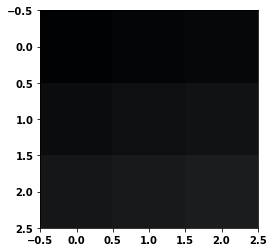
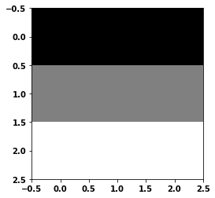

escalar = 5.678
print(escalar)
5.678
escalar_python = True
print(escalar_python)
print(type(escalar_python))
True
<class 'bool'>
import numpy as np
vector = np.array([1,2,3,4])
print(vector)
[1 2 3 4]
matriz = np.array([[1,2,3],[4,5,6],[7,8,9]])
print(matriz)
[[1 2 3]
[4 5 6]
[7 8 9]]
tensor = np.array([
[[1,2,3],[4,5,6],[6,7,8]],
[[11,12,13],[14,15,16],[17,18,19]],
[[21,22,23],[24,25,26],[27,28,29]],
])
print(tensor)
[[[ 1 2 3]
[ 4 5 6]
[ 6 7 8]]
[[11 12 13]
[14 15 16]
[17 18 19]]
[[21 22 23]
[24 25 26]
[27 28 29]]]
%matplotlib inline
import matplotlib.pyplot as plt
---------------------------------------------------------------------------
ModuleNotFoundError Traceback (most recent call last)
Cell In[7], line 1
----> 1 get_ipython().run_line_magic('matplotlib', 'inline')
3 import matplotlib.pyplot as plt
File ~\miniconda3\Lib\site-packages\IPython\core\interactiveshell.py:2432, in InteractiveShell.run_line_magic(self, magic_name, line, _stack_depth)
2430 kwargs['local_ns'] = self.get_local_scope(stack_depth)
2431 with self.builtin_trap:
-> 2432 result = fn(*args, **kwargs)
2434 # The code below prevents the output from being displayed
2435 # when using magics with decorator @output_can_be_silenced
2436 # when the last Python token in the expression is a ';'.
2437 if getattr(fn, magic.MAGIC_OUTPUT_CAN_BE_SILENCED, False):
File ~\miniconda3\Lib\site-packages\IPython\core\magics\pylab.py:99, in PylabMagics.matplotlib(self, line)
97 print("Available matplotlib backends: %s" % backends_list)
98 else:
---> 99 gui, backend = self.shell.enable_matplotlib(args.gui.lower() if isinstance(args.gui, str) else args.gui)
100 self._show_matplotlib_backend(args.gui, backend)
File ~\miniconda3\Lib\site-packages\IPython\core\interactiveshell.py:3606, in InteractiveShell.enable_matplotlib(self, gui)
3585 def enable_matplotlib(self, gui=None):
3586 """Enable interactive matplotlib and inline figure support.
3587
3588 This takes the following steps:
(...)
3604 display figures inline.
3605 """
-> 3606 from matplotlib_inline.backend_inline import configure_inline_support
3608 from IPython.core import pylabtools as pt
3609 gui, backend = pt.find_gui_and_backend(gui, self.pylab_gui_select)
File ~\miniconda3\Lib\site-packages\matplotlib_inline\__init__.py:1
----> 1 from . import backend_inline, config # noqa
2 __version__ = "0.1.6" # noqa
File ~\miniconda3\Lib\site-packages\matplotlib_inline\backend_inline.py:6
1 """A matplotlib backend for publishing figures via display_data"""
3 # Copyright (c) IPython Development Team.
4 # Distributed under the terms of the BSD 3-Clause License.
----> 6 import matplotlib
7 from matplotlib import colors
8 from matplotlib.backends import backend_agg
ModuleNotFoundError: No module named 'matplotlib'
plt.imshow(tensor, interpolation='nearest')
plt.show()

tensor = np.array([
[[0,0,0],[0,0,0],[0,0,0]],
[[128,128,128],[128,128,128],[128,128,128]],
[[255,255,255],[255,255,255],[255,255,255]],
])
plt.imshow(tensor, interpolation='nearest')
plt.show()

![Created in deepnote.com]() Created in Deepnote
Created in Deepnote